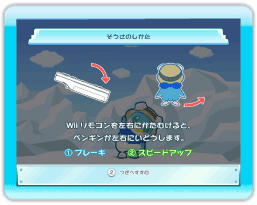
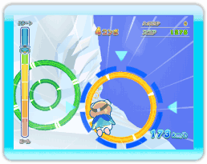
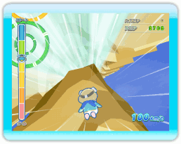
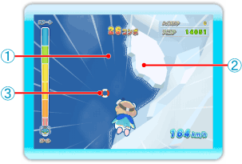

● 準備運動画面
ステージを選択すると、準備運動をしているペンギンの画面に移ります。を押すと、3カウント後にペンギンが飛び込み台からジャンプし、ゲームスタートとなります。

● ルール説明
準備運動画面で、を押すと、ルールの説明が表示されます。を押すと、次へ進み、最後まで進むと準備運動画面に戻ります。
● ペンギンのスピード
飛び降りたペンギンは、海へめがけて一定のスピードで落下していきます。ボタンを押すことでペンギンのスピードを調節することができます。
を押し続けると、最高スピードになるまで次第にスピードアップしていきます。を離すと加速状態から徐々に減速し、通常のスピードに戻ります。
を押すとペンギンが羽ばたいてブレーキをかけます。このときの落下は通常のスピードより遅くなります。

● リング
ステージ中にあるリングをくぐると得点が入ります。『ひとりで』では、リングをくぐったときのペンギンのスピードが速いほど得点が高くなります。リングの種類についてはP.12をご覧ください。

● 障害物
ステージ中にはペンギンのジャマになる障害物があります。赤カモメ以外は左右に移動して避けましょう。
○岩・氷
ぶつかると一定時間操作ができなくなります。
○白カモメ
動いているものと、止まっているものがいます。ぶつかると一定時間操作ができなくなります。
○赤カモメ
ペンギンより先にリングをくぐろうとします。赤カモメにくぐられたリングはなくなってしまいます。ぶつかっても平気なので、体当たりしてやっつけるか、スピードを出してリングを先にくぐりましょう。
● 着水

『ひとりで』では、落下してきたペンギンは最後に海に飛び込みます。飛び込むスピードと場所によって得点が変化します。
① 海………得点になります。
② 氷………得点はもらえません。
③ うきわ…高得点になります。